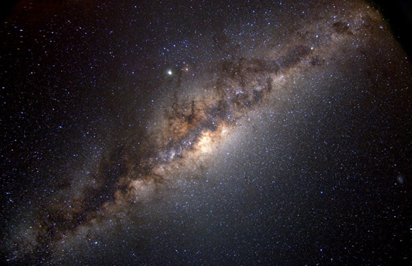
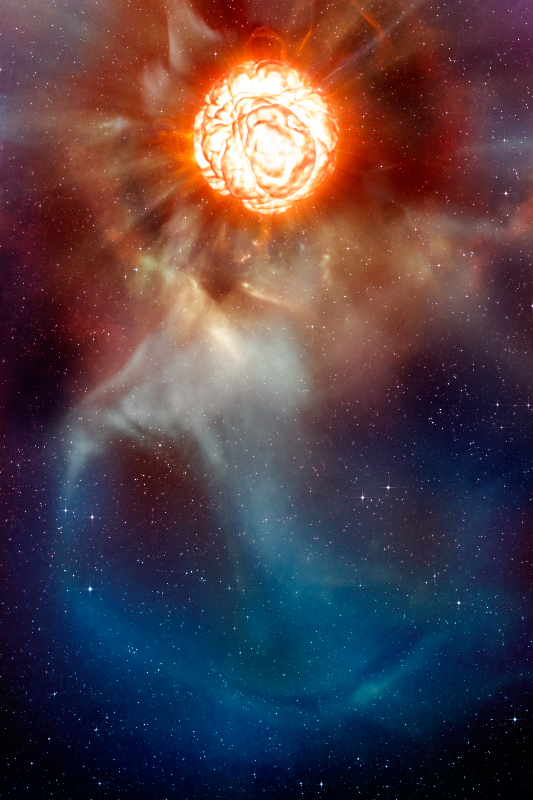
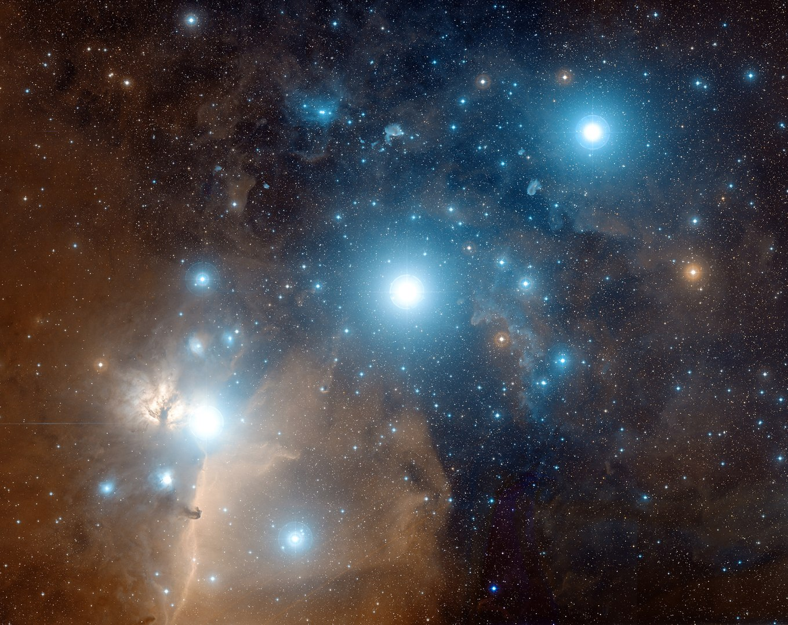

<!DOCTYPE html>
<html lang="en">
<head>
  <meta charset="utf-8">
  <meta name="viewport" content="width=device-width, initial-scale=1.0">
  <title>Digital Stars - Orion Centurion</title>

  <link rel="stylesheet" href="../dist/photo-sphere-viewer.css">

  <link href="../vendor/fontawesome-free/css/all.min.css" rel="stylesheet" type="text/css">

  <link rel="stylesheet" href="https://maxcdn.bootstrapcdn.com/bootstrap/4.0.0/css/bootstrap.min.css"
        integrity="sha384-Gn5384xqQ1aoWXA+058RXPxPg6fy4IWvTNh0E263XmFcJlSAwiGgFAW/dAiS6JXm" crossorigin="anonymous">
  <style>
    html, body {
      width: 100%;
      height: 100%;
      overflow: hidden;
      margin: 0;
      padding: 0;
    }

    #photosphere {
      width: 100%;
      height: 100%;
    }

    .psv-button.custom-button {
      font-size: 22px;
      line-height: 20px;
    }

    .demo-label {
      color: white;
      font-size: 20px;
      font-family: Helvetica, sans-serif;
      text-align: center;
      padding: 5px;
      border: 1px solid white;
      background: rgba(0, 0, 0, 0.4);
    }
  </style>
</head>
<body>

<script type="text/template" id="lorem-content">
  Teste
</script>

<div id="photosphere"></div>

<script src="../node_modules/three/build/three.js"></script>
<script src="../node_modules/promise-polyfill/dist/polyfill.js"></script>
<script src="../node_modules/uevent/browser.js"></script>
<script src="../node_modules/nosleep.js/dist/NoSleep.js"></script>
<script src="../node_modules/three/examples/js/controls/DeviceOrientationControls.js"></script>
<script src="../node_modules/three/examples/js/effects/StereoEffect.js"></script>
<script src="../dist/photo-sphere-viewer.js"></script>

<!-- text used for the marker description -->
<script type="text/template" id="pin_galaxia2">
  <h1>Milk Way</h1>
  <p>The Milky Way is the galaxy that contains the Solar System, with the name describing the galaxy's appearance from
    Earth: a hazy band of light seen in the night sky formed from stars that cannot be individually distinguished by the
    naked eye. The term Milky Way is a translation of the Latin via lactea, from the Greek  (galaxías
    "milky circle"). From Earth, the Milky Way appears as a band because its disk-shaped structure is viewed
    from its outer rim. Galileo Galilei first resolved the band of light into individual stars with his telescope in
    1610. Until the early 1920s, most astronomers thought that the Milky Way contained all the stars in the Universe.
    Following the 1920 Great Debate between the astronomers Harlow Shapley and Heber Curtis, observations by Edwin
    Hubble showed that the Milky Way is just one of many galaxies.</p>

  

  <br>
  <br>

  <a href="esfera1.html" class="btn btn-primary">Go to Milk Way</a>

  <br>
  <br>

</script>

<script type="text/template" id="pin_item1">
  <h1>Betelgueuse</h1>

  <p>Alpha Orionis (a Orionis), known as Betelgeuse, is a star of varying brightness and is the 10th or 12th brightest
    star that can be seen from Earth. It is also the second brightest star in the constellation Orion. Despite having
    the designation a ("alpha") in the Bayer Classification, it is no brighter than Rigel (ß Orionis).
    Betelgeuse is actually brighter than Rigel in infrared wavelength, but not in visible wavelengths.</p>

  
  <br>
  <br>

  <a href="beltelguese.html" class="btn btn-primary">View More</a>


</script>

<script type="text/template" id="pin_item2">
  <h1> Orion Nebula </h1>

  <p> The Orion Nebula (also known as Messier 42, M42, or NGC 1976) is a diffuse nebula situated in the Milky Way, being
    south of Orion's Belt in the constellation of Orion. It is one of the brightest nebulae, and is visible to the naked
    eye in the night sky. M42 is located at a distance of 1,344 ± 20 light years and is the closest region of massive
    star formation to Earth. The M42 nebula is estimated to be 24 light years across. It has a mass of about 2,000 times
    that of the Sun. Older texts frequently refer to the Orion Nebula as the Great Nebula in Orion or the Great Orion
    Nebula. </p>

  
  <br>
  <br>

  <a href="orionsbelt.html" class="btn btn-primary">View More</a>
  <br>
  <br>


</script>

<script type="text/template" id="pin_item3">

  <h1>Orion's Belt</h1>

  <p>Orion's Belt or the Belt of Orion, also known as the Three Kings or Three Sisters,[1] is an asterism in the
    constellation Orion. It consists of the three bright stars Alnitak, Alnilam and Mintaka.</p>
  <p>Looking for Orion's Belt in the night sky is the easiest way to locate Orion in the sky. The stars are more or less
    evenly spaced in a straight line, and so can be visualized as the belt of the hunter's clothing. They are best
    visible in the early night sky during the Northern Winter/Southern Summer, in particular the month of January at
    around 9:00 pm.</p>

  
  <br>
  <br>
  <a href="orionsbelt.html" class="btn btn-primary">View More</a>
  <br>
  <br>
  <p>


  </p>

</script>

<!-- pattern used for the polygon marker -->
<svg id="patterns">
  <defs>
    <pattern id="dots" x="10" y="10" width="30" height="30" patternUnits="userSpaceOnUse">
      <circle cx="10" cy="10" r="10" style="stroke: none; fill: rgba(255,0,0,0.4)"/>
    </pattern>
    <pattern id="points" x="10" y="10" width="15" height="15" patternUnits="userSpaceOnUse">
      <circle cx="10" cy="10" r="0.8" style="stroke: none; fill: red"/>
    </pattern>
  </defs>
</svg>

<script>
    var panos = [
        {
            url: 'space_bg2.jpg',
            desc: 'NASA International Space Apps Challenge <b>&copy; Digital Stars</b>',
            target: {
                longitude: 3.848,
                latitude: -0.244,
                zoom: 50
            }
        }, {
            url: 'space_bg2.jpg',
            desc: 'NASA International Space Apps Challenge <b>&copy; Digital Stars</b>',
            target: {
                longitude: 3.715,
                latitude: 0.574,
                zoom: 50
            }
        }
    ];

    const PSV = new PhotoSphereViewer({
        container: 'photosphere',
        panorama: panos[0].url,
        caption: panos[0].desc,
        loadingImg: '../assets/photosphere-logo.gif',
        longitudeRange: [-7 * Math.PI / 8, 7 * Math.PI / 8],
        latitudeRange: [-3 * Math.PI / 4, 3 * Math.PI / 4],
        autorotateSpeed: '-2rpm',
        defaultZoomLvl: 0,
        fisheye: false,
        moveSpeed: 1.1,
//    touchmoveTwoFingers: true,
//    mousemoveHover: true,
        navbar: [
            'autorotate', 'zoom', 'download', 'markers', 'markersList',
            {
                content: '💬',
                title: 'Show all tooltips',
                className: 'custom-button',
                onClick: function () {
                    PSV.hud.toggleAllTooltips();
                }
            },
            'caption', 'gyroscope', 'stereo', 'fullscreen',
        ],
        markers: (function () {
            var a = [];

            a.push({
                id: 'Milky Way',
                tooltip: {
                    content: 'Milky Way',
                    position: 'bottom right',
                },
                content: document.getElementById('pin_galaxia2').innerHTML,
                latitude: 0,
                longitude: 0.0,
                image: '../assets/rocket.png',
                width: 32,
                height: 32,
                anchor: 'bottom center',
            });

            a.push({
                id: 'p2_link1',
                tooltip: {
                    content: 'Betelguese',
                    position: 'bottom right',
                },
                content: document.getElementById('pin_item1').innerHTML,
                latitude: 0.3,
                longitude: 0.7,
                image: '../assets/planet.png',
                width: 32,
                height: 32,
                anchor: 'bottom center',
            });

            a.push({
                id: 'p2_link2',
                tooltip: {
                    content: 'Orion Nebula',
                    position: 'bottom right',
                },
                content: document.getElementById('pin_item2').innerHTML,
                latitude: -0.4,
                longitude: -0.9,
                image: '../assets/planet.png',
                width: 32,
                height: 32,
                anchor: 'bottom center',
            });

            a.push({
                id: 'p2_link3',
                tooltip: {
                    content: 'Orion Belt',
                    position: 'bottom right',
                },
                content: document.getElementById('pin_item3').innerHTML,
                latitude: 0.5,
                longitude: -0.5,
                image: '../assets/planet.png',
                width: 32,
                height: 32,
                anchor: 'bottom center',
            });

            return a;

        }()),
    });

    PSV.on('click', function (e, data) {
        PSV.hud.addMarker({
            id: '#' + Math.random(),
            tooltip: 'Custom marker',
            longitude: data.longitude,
            latitude: data.latitude,
            image: '../assets/pin1.png',
            width: 32,
            height: 32,
            anchor: 'bottom center',
            data: {
                deletable: true,
            },
        });
    });

    PSV.on('select-marker', function (e, marker, dblclick) {
        if (marker.data && marker.data.deletable) {
            if (dblclick) {
                PSV.hud.removeMarker(marker);
            } else {
                PSV.hud.updateMarker({
                    id: marker.id,
                    image: '../assets/pin2.png',
                });
            }
        }
    });

    PSV.on('over-marker', function (e, marker) {
        console.log('over', marker.id);
    });

    PSV.on('leave-marker', function (e, marker) {
        console.log('leave', marker.id);
    });

    PSV.on('select-marker-list', function (e, marker) {
        console.log('select-list', marker.id);
    });

    PSV.on('goto-marker-done', function (e, marker) {
        console.log('goto-done', marker.id);
    });

    PSV.on('show-tooltip', function (e, marker) {
        if (marker) {
            console.log('show-tooltip', marker.id);
        }
    });
</script>
</body>
</html>
